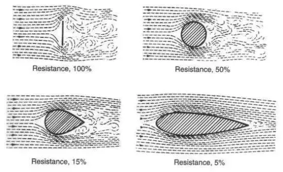

Air resistance
Air resistance
Air resistance, also known as drag, plays a crucial role in influencing the speed of a CO2 dragster. As a CO2 dragster moves through the air, it encounters resistance due to the friction between the air and the surface of the dragster. This resistance can significantly impact the dragster's speed, and its effects can be explained by the following principles:
Opposing Force:
Air resistance acts as an opposing force against the forward motion of the CO2 dragster. As the dragster accelerates, it displaces air molecules, and these air molecules exert a force in the opposite direction of motion.
Increased Resistance with Speed:
The magnitude of air resistance increases with the speed of the dragster. At lower speeds, the impact of air resistance is minimal, but as the dragster accelerates, the force of air resistance becomes more pronounced. Think about it this way: the faster we go, the harder we are colliding with the air molecules. Using Newton's third law "Every action has an equal and opposite reaction", this means that the harder we hit the air molecules, the more force it will put on us.
Acceleration Reduction:
Air resistance acts as a form of friction (note that air resistance is also known as "Fluid Friction"), converting some of the kinetic energy of the dragster into heat. This results in a reduction in the dragster's acceleration over time.
Terminal Velocity:
At a certain speed, known as the terminal velocity, the drag force becomes equal to the propulsive force provided by the expelled CO2 gas. At this point, the dragster reaches a constant speed, and further acceleration is limited.
Streamlining and Design:
The design of the CO2 dragster can influence the impact of air resistance. A streamlined and aerodynamic design helps reduce the frontal area exposed to the oncoming air, minimizing drag and allowing for higher speeds. Think about it this way: the greater frontal surface area we have, the more molecules we hit at once. Using Newont's third law "Every action has an equal and opposite reaction", this means that all the molecules will impact us with the same force as we impact them. With a whole bunch of them, the force only multiplies. Therefore, with a smaller frontal surface area, we hit less molecules at once, which will reduce the amount of force it puts on us. Here is an example:



The air resistance or drag force on an object moving through the air can be calculated using the drag equation. The drag force (F
drag
) is given by the formula:F
drag
= (1/2)(Cd
)(ρ)(A)(V^2) where each vriable represents the following:F
drag
: the drag forceDrag force, often referred to simply as drag, is a resistive force that opposes the motion of an object moving through a fluid, such as air or water. In the context of aerodynamics, we commonly refer to "air resistance" when discussing drag force. The primary function of the drag force is to slow down the motion of an object by dissipating its kinetic energy.
Here are key points to udnerstand about drag force:
1. Drag force arises due to the interaction between the object and the fluid through which it is moving. As an object moves through a fluid, it displaces the fluid, and this interaction results in the generation of drag.
2. The drag force is directly proportional to the square of the velocity of the object. This means that as the speed of the object increases, the drag force increases significantly.
3. The drag force depends on several factors, including the shape of the object, the size of its cross-sectional area (frontal area), the density of the fluid through which it is moving, and the drag coefficient (C
d
), which represents the aerodynamic characteristics of the object.Two Types of Drag:
There are two main types of drag, form drag (pressure drag) and skin friction drag.
Form drag:
Form drag, also known as pressure drag or profile drag, is a component of drag force that arises due to the shape of an object moving through a fluid, such as air. It is one of the two main types of drag, with the other being skin friction drag.
Here are the key characteristics of form drag:
1. Form drag results from the pressure differences around an object as it moves through a fluid. These pressure variations are caused by the object's shape and its interaction with the flowing fluid.
2. The form drag is highly dependent on the shape of the object. Objects with less streamlined or more irregular shapes tend to experience higher form drag because they disrupt the smooth flow of the fluid, creating areas of higher and lower pressure.
3. Form drag contributes significantly to the total drag force experienced by an object. It is particularly prominent at higher speeds where air resistance becomes a more significant factor.
4. Engineers aim to minimize form drag by designing objects with streamlined and aerodynamic shapes. Streamlining reduces the disturbance of the fluid flow, minimizing pressure differences and, consequently, reducing form drag.
Components of Form Drag:
Form drag can be further divided into several components, including:
Pressure Drag: Arises from the pressure differences around the front and rear of the object.
Base Drag: Occurs at the rear of the object where the fluid must fill in the void left by the moving object, creating a region of low pressure.
Relation to Drag Coefficient:
The drag coefficient (C
d
) is a dimensionless parameter that quantifies the aerodynamic efficiency of an object. Form drag is often expressed in terms of the drag coefficient, and its value is influenced by the object's shape.In summary, form drag is the drag force resulting from the pressure variations around an object moving through a fluid, primarily due to its shape. Engineers strive to minimize form drag by designing objects with streamlined shapes to improve overall efficiency and reduce aerodynamic resistance.
Skin friction drag:
Skin friction drag, also known simply as friction drag, is a component of the total drag force experienced by an object moving through a fluid, such as air or water. It is one of the two main types of drag, with the other being form drag.
Key characteristics of skin friction drag include:
Origin:
Skin friction drag results from the friction between the surface of the moving object and the fluid through which it is moving. In the case of air, it is the friction between the air molecules and the surface of the object.
Dependence on Surface Roughness:
The amount of skin friction drag is influenced by the roughness of the surface. A rough surface creates more turbulence and increases the skin friction drag, while a smoother surface reduces this type of drag.
Effect on Drag Force:
Skin friction drag contributes to the overall drag force experienced by an object. While it is generally less significant than form drag at higher speeds, it can still be a considerable factor, especially for streamlined objects with relatively smooth surfaces.
Surface Shear Stress:
Skin friction drag is often characterized by the shear stress exerted on the surface of the object. This shear stress is a measure of the force per unit area acting parallel to the surface due to the movement of the fluid.
Importance of Surface Smoothness:
Engineers often work to minimize skin friction drag by designing surfaces that are as smooth as possible. Smoother surfaces reduce the shear stress and the associated frictional forces, helping to improve the overall aerodynamic efficiency of the object.
Relation to Reynolds Number:
The Reynolds number, a dimensionless parameter, is often used to characterize the flow of fluid around an object. It is particularly relevant to skin friction drag, as the Reynolds number is indicative of whether the flow around the object is laminar or turbulent. The transition from laminar to turbulent flow can affect the magnitude of skin friction drag.
In summary, skin friction drag is the component of drag force arising from the friction between the surface of an object and the fluid through which it is moving. Engineers focus on minimizing skin friction drag by designing smooth surfaces and optimizing the flow characteristics around the object to improve overall efficiency.
C
d
: Drag coefficientThe drag coefficient (C
d
) is a dimensionless number that quantifies the aerodynamic efficiency of an object in terms of its resistance to motion through a fluid. It is a crucial parameter in the drag equation, which relates the drag force (Fdrag
) experienced by an object to various factors, including the drag coefficient.Key points about the drag coefficient:
1. The drag coefficient is highly dependent on the shape of the object moving through the fluid. Different shapes and configurations result in different drag coefficients. Here is an example:
2. The drag coefficient is typically determined through wind tunnel testing or computational fluid dynamics simulations. Engineers and scientists conduct experiments to measure the drag force at various speeds and angles of attack, allowing them to calculate the drag coefficient.
3. The drag coefficient can vary depending on whether the flow around the object is laminar or turbulent. In general, objects with smooth surfaces may have different drag coefficients for laminar and turbulent flow regimes.
4. Engineers strive to minimize the drag coefficient to enhance the aerodynamic performance of vehicles, aircraft, and other objects. Streamlining shapes and reducing surface roughness are common strategies to achieve lower drag coefficients.
5. The drag coefficient allows for the comparison of the drag characteristics of different objects, regardless of their size or velocity. Lower drag coefficients indicate better aerodynamic performance.
6. The drag coefficient can be further divided into components, such as form drag coefficient (C
d,form
) and skin friction drag coefficient (Cd,friction
), providing insights into the specific aerodynamic contributions.In summary, the drag coefficient is a dimensionless parameter that characterizes the aerodynamic drag of an object moving through a fluid. It is a critical factor in aerodynamic design, influencing the overall efficiency and performance of vehicles and other objects.
ρ: the air density
In the context of the drag equation and aerodynamics, the symbol ρ (rho) represents the density of the fluid through which an object is moving. The density (ρ) is a measure of how much mass is contained in a given volume. For air, which is the most common fluid considered in aerodynamics, the density is typically denoted as ρ
(air)
.The density of air is affected by factors such as altitude, temperature, and humidity. At higher altitudes, the air density is lower, and it decreases with increasing temperature. In aerodynamics, variations in air density are considered to account for the environmental conditions in which the object is moving. But this will be a constant in our case, so there really isn't much to do about it.
A: reference area (the frontal area of the object perpendicular to the direction of motion)
The reference area is a crucial parameter in the drag equation because it defines the surface upon which the fluid (air) applies pressure, resulting in drag. The choice of reference area depends on the type of object and the conventions used in aerodynamic calculations. For streamlined objects like cars or airplanes, the reference area is often the frontal cross-sectional area. For flat plates, it may be the area of the plate facing the flow.
In summary, A in the drag equation represents the reference area, which is a measure of the effective frontal area of the object exposed to the oncoming fluid flow.
V: is the velocity of the object relative to the air.
In the context of the drag equation in aerodynamics, the symbol V represents the velocity of the object relative to the fluid through which it is moving.
The velocity (V) is the speed of the object through the fluid, and it is squared in the equation, emphasizing the quadratic relationship between velocity and drag force. This means that the drag force increases significantly with an increase in velocity.
It's important to note that V is the relative velocity; it is the velocity of the object with respect to the fluid, taking into account both the velocity of the object and the velocity of the fluid. The drag force depends on how fast the object is moving through the fluid, and the direction of the drag force is opposite to the direction of motion.
In summary, V in the drag equation represents the relative velocity of the object moving through the fluid, and it plays a significant role in determining the magnitude of the drag force.
Reducing air-resistance:
To reduce air resistance, we are going to focus on aerodynamics. For short, Aerodynamics is the study of the behavior of air as it interacts with solid objects, such as aircraft, cars, buildings, and other structures. It focuses on understanding the forces and motions associated with the movement of air around these objects and how they affect the objects' performance and behavior.
By reviewing the formula F
drag
= (1/2)(Cd
)(ρ)(A)(V^2), we can see that to reduce the value of Fdrag
, we must mainly reduce Cdrag
, and A, which is the drag coefficient and reference area.By looking at the diagram:
we can see that the most aerodynamic dragster shape is the "Streamlined Half-body." We also notice that the total reference area of this shape is relatively smaller than spheres or cubes.
Summary:
In summary, in order to reduce air-resistance of a dragster, we must focus on aerodynamics and specifically on how our dragster is shaped. This takes into consideration of the drag coefficient and the reference area of the dragster, which are two crucial aspects of reducing air resistance.